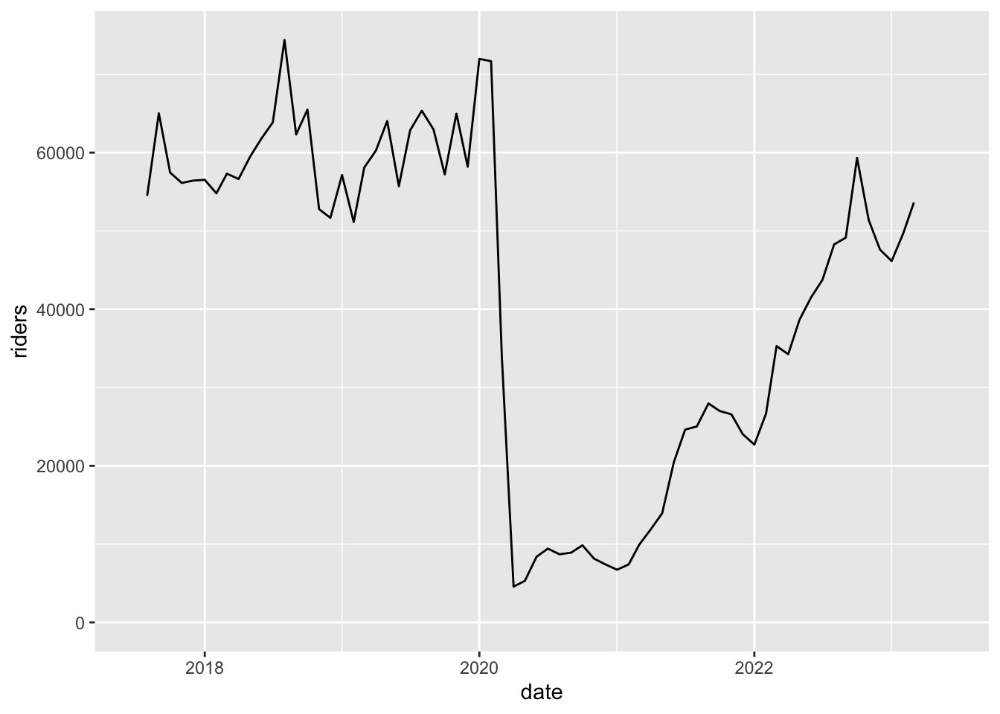
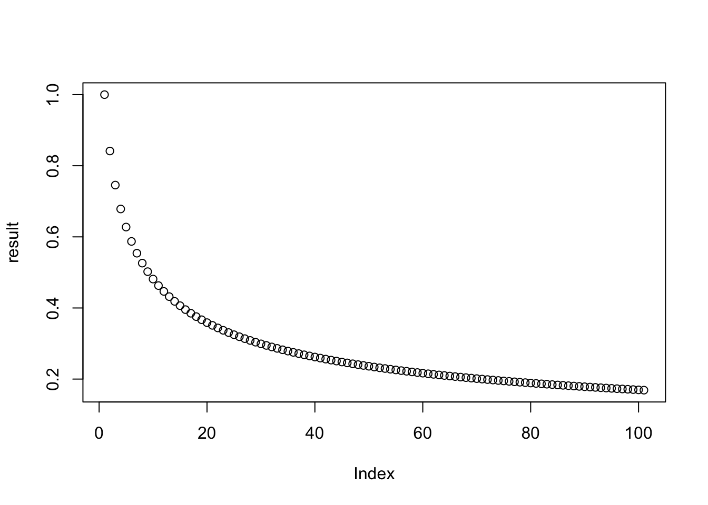

4 Reshaping Data & Automating Tasks
This chapter is part 2 (of 2) of Cleaning Data & Automating Tasks, a workshop series about how to prepare data for analysis and automate tedious repetitive tasks. The major topics of this chapter are how to reshape datasets with pivots, how to combine related datasets with joins, and how to select and use iteration strategies that automate repetitive computations.
Learning Objectives
- Explain what it means for data to be tidy
- Use the tidyr package to reshape data
- Describe and use R’s for, while, and repeat loops
- Identify the most appropriate iteration strategy for a given problem
- Explain strategies to organize iterative code
4.1 Tidy Datasets
The structure of a dataset—its shape and organization—has enormous influence on how difficult it will be to analyze, so making structural changes is an important part of the cleaning process. Researchers conventionally arrange tabular datasets so that each row contains a single observation or case, and each column contains a single kind of measurement or identifier, called a feature.
In 2014, Hadley Wickham refined and formalized the conventions for tabular datasets by introducing the concept of tidy datasets, which have a specific structure. Paraphrasing Wickham, the rules for a tidy dataset are:
- Every column is a single feature.
- Every row is a single observation.
- Every cell is a single value.
These rules ensure that all of the values in a dataset are visually organized and are easy to access with indexing operations. They’re also specific enough to make tidiness a convenient standard for functions that operate on tabular datasets. In fact, the Tidyverse packages (see Section 3.1) are designed from the ground up for working with tidy datasets. Tidy datesets have also been adopted as a standard in other software, including various packages for Python and Julia.
This section explains how to reshape tabular datasets into tidy datasets. While reshaping can seem tricky at first, making sure your dataset has the right structure before you begin analysis saves time and frustration in the long run.
4.1.1 The tidyr Package
The tidyr package provides functions to reshape tabular datasets. It also provides examples of tidy and untidy datasets. Like most Tidyverse packages, it comes with detailed documentation and a cheatsheet.
As usual, install the package if you haven’t already, and then load it:
Let’s start with an example of a tidy dataset. The table1 dataset in the
package records the number of tuberculosis cases across several different
countries and years:
## # A tibble: 6 × 4
## country year cases population
## <chr> <dbl> <dbl> <dbl>
## 1 Afghanistan 1999 745 19987071
## 2 Afghanistan 2000 2666 20595360
## 3 Brazil 1999 37737 172006362
## 4 Brazil 2000 80488 174504898
## 5 China 1999 212258 1272915272
## 6 China 2000 213766 1280428583Each of the four columns contains a single kind of measurement or identifier, so the dataset satifies tidy rule 1. The measurements were taken at the country-year level, and each row contains data for one country-year pair, so the dataset also satisfies tidy rule 2. Each cell in the data frame only contains one value, so the dataset also satisfies tidy rule 3.
The same data are recorded in table2, table3, and the pair table4a with
table4b, but these are all untidy datasets. For example, table2 breaks
rule 1 because the column count contains two different kinds of
measurements—case counts and population counts:
## # A tibble: 12 × 4
## country year type count
## <chr> <dbl> <chr> <dbl>
## 1 Afghanistan 1999 cases 745
## 2 Afghanistan 1999 population 19987071
## 3 Afghanistan 2000 cases 2666
## 4 Afghanistan 2000 population 20595360
## 5 Brazil 1999 cases 37737
## 6 Brazil 1999 population 172006362
## 7 Brazil 2000 cases 80488
## 8 Brazil 2000 population 174504898
## 9 China 1999 cases 212258
## 10 China 1999 population 1272915272
## 11 China 2000 cases 213766
## 12 China 2000 population 1280428583When considering whether you should reshape a dataset, think about what the features are and what the observations are. These depend on the dataset itself, but also on what kinds of analyses you want to do. Datasets sometimes have closely related features or multiple (nested) levels of observation. The tidyr documentation includes a detailed article on how to reason about reshaping datasets.
If you do decide to reshape a dataset, then you should also think about what role each feature serves:
Identifiers are labels that distinguish observations from one another. They are often but not always categorical. Examples include names or identification numbers, treatment groups, and dates or times. In the tuberculosis data set, the
countryandyearcolumns are identifiers.Measurements are the values collected for each observation and typically the values of research interest. For the tuberculosis data set, the
casesandpopulationcolumns are measurements.
Having a clear understanding of which features are identifiers and which are measurements makes it easier to use the tidyr functions.
4.1.2 Rows into Columns
Tidy data rule 1 is that each column must be a single feature. The table2
dataset breaks this rule:
## # A tibble: 12 × 4
## country year type count
## <chr> <dbl> <chr> <dbl>
## 1 Afghanistan 1999 cases 745
## 2 Afghanistan 1999 population 19987071
## 3 Afghanistan 2000 cases 2666
## 4 Afghanistan 2000 population 20595360
## 5 Brazil 1999 cases 37737
## 6 Brazil 1999 population 172006362
## 7 Brazil 2000 cases 80488
## 8 Brazil 2000 population 174504898
## 9 China 1999 cases 212258
## 10 China 1999 population 1272915272
## 11 China 2000 cases 213766
## 12 China 2000 population 1280428583To make the dataset tidy, the measurements in the count column need to be
separated into two separate columns, cases and population, based on the
categories in the type column.
You can use the pivot_wider function to pivot the single count column
into two columns according to the type column. This makes the dataset wider,
hence the name pivot_wider.
The function’s first parameter is the dataset to pivot. Other important parameters are:
values_from– The column(s) to pivot.names_from– The column that contains names for the new columns.id_cols– The identifier columns, which are not pivoted. This defaults to all columns except those invalues_fromandnames_from.
Here’s how to use the function to make table2 tidy:
## # A tibble: 6 × 4
## country year cases population
## <chr> <dbl> <dbl> <dbl>
## 1 Afghanistan 1999 745 19987071
## 2 Afghanistan 2000 2666 20595360
## 3 Brazil 1999 37737 172006362
## 4 Brazil 2000 80488 174504898
## 5 China 1999 212258 1272915272
## 6 China 2000 213766 1280428583The function automatically removes values from the country and year columns
as needed to maintain their original correspondence with the pivoted values.
4.1.3 Columns into Rows
Tidy data rule 2 is that every row must be a single observation. The table4a
and table4b datasets break this rule because each row in each dataset
contains measurements for two different years:
## # A tibble: 3 × 3
## country `1999` `2000`
## <chr> <dbl> <dbl>
## 1 Afghanistan 745 2666
## 2 Brazil 37737 80488
## 3 China 212258 213766## # A tibble: 3 × 3
## country `1999` `2000`
## <chr> <dbl> <dbl>
## 1 Afghanistan 19987071 20595360
## 2 Brazil 172006362 174504898
## 3 China 1272915272 1280428583The tuberculosis case counts are in table4a. The population counts are in
table4b. Neither is tidy.
To make the table4a dataset tidy, the 1999 and 2000 columns need to be
pivoted into two new columns: one for the measurements (the counts) and one for
the identifiers (the years). It might help to visualize this as stacking the
two separate columns 1999 and 2000 together, one on top of the other, and
then adding a second column with the appropriate years. The same process makes
table4b tidy.
You can use the pivot_longer function to pivot the two columns 1999 and
2000 into a column of counts and a column of years. This makes the dataset
longer, hence the name pivot_longer.
Again the function’s first parameter is the dataset to pivot. Other important parameters are:
cols– The columns to pivot.values_to– Name(s) for the new measurement column(s)names_to– Name(s) for the new identifier column(s)
Here’s how to use the function to make table4a tidy:
## # A tibble: 6 × 3
## country year cases
## <chr> <chr> <dbl>
## 1 Afghanistan 1999 745
## 2 Afghanistan 2000 2666
## 3 Brazil 1999 37737
## 4 Brazil 2000 80488
## 5 China 1999 212258
## 6 China 2000 213766In this case, the cols parameter is set to all columns except the country
column, because the country column does not need to be pivoted. The function
automatically repeats values in the country column as needed to maintain its
original correspondence with the pivoted values.
Here’s the same for table4b:
## # A tibble: 6 × 3
## country year population
## <chr> <chr> <dbl>
## 1 Afghanistan 1999 19987071
## 2 Afghanistan 2000 20595360
## 3 Brazil 1999 172006362
## 4 Brazil 2000 174504898
## 5 China 1999 1272915272
## 6 China 2000 1280428583Once the two datasets are tidy, you can join them with the merge function to
reproduce table1:
## country year cases population
## 1 Afghanistan 1999 745 19987071
## 2 Afghanistan 2000 2666 20595360
## 3 Brazil 1999 37737 172006362
## 4 Brazil 2000 80488 174504898
## 5 China 1999 212258 1272915272
## 6 China 2000 213766 12804285834.1.4 Separating Values
Tidy data rule 3 says each value must have its own cell. The table3 dataset
breaks this rule because the rate column contains two values per cell:
## # A tibble: 6 × 3
## country year rate
## <chr> <dbl> <chr>
## 1 Afghanistan 1999 745/19987071
## 2 Afghanistan 2000 2666/20595360
## 3 Brazil 1999 37737/172006362
## 4 Brazil 2000 80488/174504898
## 5 China 1999 212258/1272915272
## 6 China 2000 213766/1280428583The two values separated by / in the rate column are the tuberculosis case
count and the population count.
To make this dataset tidy, the rate column needs to be split into two
columns, cases and population. The values in the rate column are strings,
so one way to do this is with the stringr package’s str_split_fixed function,
described in Section 3.4.4:
library(stringr)
# Split the rate column into 2 columns.
cols = str_split_fixed(table3$rate, fixed("/"), 2)
# Remove the rate column and append the 2 new columns.
tidy3 = table3[-3]
tidy3$cases = as.numeric(cols[, 1])
tidy3$population = as.numeric(cols[, 2])
tidy3## # A tibble: 6 × 4
## country year cases population
## <chr> <dbl> <dbl> <dbl>
## 1 Afghanistan 1999 745 19987071
## 2 Afghanistan 2000 2666 20595360
## 3 Brazil 1999 37737 172006362
## 4 Brazil 2000 80488 174504898
## 5 China 1999 212258 1272915272
## 6 China 2000 213766 1280428583Extracting values, converting to appropriate data types, and then combining everything back into a single data frame is an extremely common pattern in data science.
The tidyr package provides the separate function to streamline the steps
taken above. The first parameter is the dataset, the second is the column to
split, the third is the names of the new columns, and the fourth is the
delimiter. The convert parameter controls whether the new columns are
automatically converted to appropriate data types:
## # A tibble: 6 × 4
## country year cases population
## <chr> <dbl> <int> <int>
## 1 Afghanistan 1999 745 19987071
## 2 Afghanistan 2000 2666 20595360
## 3 Brazil 1999 37737 172006362
## 4 Brazil 2000 80488 174504898
## 5 China 1999 212258 1272915272
## 6 China 2000 213766 1280428583As of writing, the tidyr developers have deprecated the separate function in
favor of several more specific functions (separate_wider_delim,
separate_wider_position, and separate_wider_regex). These functions are
still experimental, so we still recommend using the separate function in the
short term.
4.1.5 Case Study: SMART Ridership
Sonoma-Marin Area Rail Transit (SMART) is a single-line passenger rail service between the San Francisco Bay and Santa Rosa. They publish data about monthly ridership in PDF and Excel format. In this case study, you’ll reshape and clean the dataset to prepare it for analysis.
To get started, download the December 2022 report it Excel
format. Pay attention to where you save the file—or move it to
a directory just for files related to this case study—so that you can load it
into R. If you want, you can use R’s download.file function to download the
file rather than your browser.
The readxl package provides functions to read data from Excel files. Install the package if you don’t already have it installed, and then load it:
You can use the read_excel function to read a sheet from an Excel
spreadsheet. Before doing so, it’s a good idea to manually inspect the
spreadsheet in a spreadsheet program. The SMART dataset contains two tables in
the first sheet, one for total monthly ridership and another for average
weekday ridership (by month).
Let’s focus on the total monthly ridership table, which occupies cells B4 to
H16. You can specify a range of cells when you call read_excel by setting the
range parameter:
smart_path = "./data/SMART Ridership Web Posting_Mar.23.xlsx"
smart = read_excel(smart_path, range = "B4:H16")
smart## # A tibble: 12 × 7
## Month FY18 FY19 FY20 FY21 FY22 `FY23 (DRAFT)`
## <chr> <chr> <dbl> <dbl> <dbl> <dbl> <dbl>
## 1 Jul - 63864 62851 9427 24627 43752
## 2 Aug 54484 74384 65352 8703 25020 48278
## 3 Sep 65019 62314 62974 8910 27967 49134
## 4 Oct 57453 65492 57222 9851 26998. 59322
## 5 Nov 56125 52774 64966 8145 26575 51383
## 6 Dec 56425 51670 58199. 7414 24050 47606
## 7 Jan 56527 57136 71974 6728 22710 46149
## 8 Feb 54797 51130 71676 7412 26652 49724
## 9 Mar 57312 58091 33624 9933 35291 53622
## 10 Apr 56631 60256 4571 11908 34258 NA
## 11 May 59428 64036 5308 13949 38655 NA
## 12 Jun 61828 55700 8386 20469 41525 NAThe loaded dataset needs to be cleaned. The FY18 column uses a hyphen to
indicate missing data and has the wrong data type. The dates—months and
years—are identifiers for observations, so the dataset is also not tidy.
You can correct the missing value in the FY18 column with indexing, and the
type with the as.numeric function:
## # A tibble: 6 × 7
## Month FY18 FY19 FY20 FY21 FY22 `FY23 (DRAFT)`
## <chr> <dbl> <dbl> <dbl> <dbl> <dbl> <dbl>
## 1 Jul NA 63864 62851 9427 24627 43752
## 2 Aug 54484 74384 65352 8703 25020 48278
## 3 Sep 65019 62314 62974 8910 27967 49134
## 4 Oct 57453 65492 57222 9851 26998. 59322
## 5 Nov 56125 52774 64966 8145 26575 51383
## 6 Dec 56425 51670 58199. 7414 24050 47606To make the dataset tidy, it needs to be reshaped so that the values in the various fiscal year columns are all in one column. In other words, the dataset needs to be pivoted longer (Section 4.1.3). The result of the pivot will be easier to understand if you rename the columns as their years first. Here’s one way to do that:
## # A tibble: 6 × 7
## Month `2018` `2019` `2020` `2021` `2022` `2023`
## <chr> <dbl> <dbl> <dbl> <dbl> <dbl> <dbl>
## 1 Jul NA 63864 62851 9427 24627 43752
## 2 Aug 54484 74384 65352 8703 25020 48278
## 3 Sep 65019 62314 62974 8910 27967 49134
## 4 Oct 57453 65492 57222 9851 26998. 59322
## 5 Nov 56125 52774 64966 8145 26575 51383
## 6 Dec 56425 51670 58199. 7414 24050 47606Next, use pivot_longer to pivot the dataset:
## # A tibble: 6 × 3
## Month fiscal_year riders
## <chr> <chr> <dbl>
## 1 Jul 2018 NA
## 2 Jul 2019 63864
## 3 Jul 2020 62851
## 4 Jul 2021 9427
## 5 Jul 2022 24627
## 6 Jul 2023 43752Now the dataset is tidy, but it’s still not completely clean. To make it easy
to study time trends, let’s combine and convert the month and fiscal_year
columns into a calendar date. You can use functions from the lubridate package
(Section 3.2.1) to do this. First paste the year and
month together and use the my function to parse them as dates:
##
## Attaching package: 'lubridate'## The following objects are masked from 'package:base':
##
## date, intersect, setdiff, union## [1] "2018-07-01" "2019-07-01" "2020-07-01" "2021-07-01" "2022-07-01"
## [6] "2023-07-01" "2018-08-01" "2019-08-01" "2020-08-01" "2021-08-01"
## [11] "2022-08-01" "2023-08-01" "2018-09-01" "2019-09-01" "2020-09-01"
## [16] "2021-09-01" "2022-09-01" "2023-09-01" "2018-10-01" "2019-10-01"
## [21] "2020-10-01" "2021-10-01" "2022-10-01" "2023-10-01" "2018-11-01"
## [26] "2019-11-01" "2020-11-01" "2021-11-01" "2022-11-01" "2023-11-01"
## [31] "2018-12-01" "2019-12-01" "2020-12-01" "2021-12-01" "2022-12-01"
## [36] "2023-12-01" "2018-01-01" "2019-01-01" "2020-01-01" "2021-01-01"
## [41] "2022-01-01" "2023-01-01" "2018-02-01" "2019-02-01" "2020-02-01"
## [46] "2021-02-01" "2022-02-01" "2023-02-01" "2018-03-01" "2019-03-01"
## [51] "2020-03-01" "2021-03-01" "2022-03-01" "2023-03-01" "2018-04-01"
## [56] "2019-04-01" "2020-04-01" "2021-04-01" "2022-04-01" "2023-04-01"
## [61] "2018-05-01" "2019-05-01" "2020-05-01" "2021-05-01" "2022-05-01"
## [66] "2023-05-01" "2018-06-01" "2019-06-01" "2020-06-01" "2021-06-01"
## [71] "2022-06-01" "2023-06-01"The SMART fiscal year extends from July to the following June and equals the calendar year at the end of the period. So for observations from July to December, the calendar year is the fiscal year minus 1. You can use indexing to make this adjustment efficiently, and then append the dates to the data frame:
jul2dec = month(dates) >= 7
dates[jul2dec] = dates[jul2dec] - period(1, "year")
smart$date = dates
head(smart)## # A tibble: 6 × 4
## Month fiscal_year riders date
## <chr> <chr> <dbl> <date>
## 1 Jul 2018 NA 2017-07-01
## 2 Jul 2019 63864 2018-07-01
## 3 Jul 2020 62851 2019-07-01
## 4 Jul 2021 9427 2020-07-01
## 5 Jul 2022 24627 2021-07-01
## 6 Jul 2023 43752 2022-07-01As a final adjustment, you can use the tolower function to convert the column
names to lowercase, so that they’re easier to use during analysis:
## # A tibble: 72 × 4
## month fiscal_year riders date
## <chr> <chr> <dbl> <date>
## 1 Jul 2018 NA 2017-07-01
## 2 Jul 2019 63864 2018-07-01
## 3 Jul 2020 62851 2019-07-01
## 4 Jul 2021 9427 2020-07-01
## 5 Jul 2022 24627 2021-07-01
## 6 Jul 2023 43752 2022-07-01
## 7 Aug 2018 54484 2017-08-01
## 8 Aug 2019 74384 2018-08-01
## 9 Aug 2020 65352 2019-08-01
## 10 Aug 2021 8703 2020-08-01
## # ℹ 62 more rowsNow that the dataset is tidied and cleaned, it’s straightforward to do things like plot it as a time series:
## Warning: Removed 4 rows containing missing values (`geom_line()`).
Notice the huge drop (more than 90%) in April of 2020 due to the COVID-19 pandemic!
4.1.6 Without tidyr
This section shows how to pivot datasets without the help of the tidyr package. In practice, we recommend that you use the package, but the examples here may make it easier to understand what’s actually happening when you pivot a dataset.
4.1.6.1 Rows into Columns
The steps for pivoting table2 wider are:
- Subset rows to separate
casesandpopulationvalues. - Remove the
typecolumn from each. - Rename the
countcolumn tocasesandpopulation. - Merge the two subsets by matching
countryandyear.
And the code is:
# Step 1
cases = table2[table2$type == "cases", ]
pop = table2[table2$type == "population", ]
# Step 2
cases = cases[-3]
pop = pop[-3]
# Step 3
names(cases)[3] = "cases"
names(pop)[3] = "population"
# Step 4
merge(cases, pop)## country year cases population
## 1 Afghanistan 1999 745 19987071
## 2 Afghanistan 2000 2666 20595360
## 3 Brazil 1999 37737 172006362
## 4 Brazil 2000 80488 174504898
## 5 China 1999 212258 1272915272
## 6 China 2000 213766 12804285834.1.6.2 Columns into Rows
The steps for pivoting table4a longer are:
- Subset columns to separate
1999and2000into two data frames. - Add a
yearcolumn to each. - Rename the
1999and2000columns tocases. - Stack the two data frames with
rbind.
And the code is:
# Step 1
df99 = table4a[-3]
df00 = table4a[-2]
# Step 2
df99$year = "1999"
df00$year = "2000"
# Step 3
names(df99)[2] = "cases"
names(df00)[2] = "cases"
# Step 4
rbind(df99, df00)## # A tibble: 6 × 3
## country cases year
## <chr> <dbl> <chr>
## 1 Afghanistan 745 1999
## 2 Brazil 37737 1999
## 3 China 212258 1999
## 4 Afghanistan 2666 2000
## 5 Brazil 80488 2000
## 6 China 213766 20004.2 Iteration Strategies
R is powerful tool for automating tasks that have repetitive steps. For example, you can:
- Apply a transformation to an entire column of data.
- Compute distances between all pairs from a set of points.
- Read a large collection of files from disk in order to combine and analyze the data they contain.
- Simulate how a system evolves over time from a specific set of starting parameters.
- Scrape data from many pages of a website.
You can implement concise, efficient solutions for these kinds of tasks in R by using iteration, which means repeating a computation many times. R provides four different strategies for writing iterative code:
- Vectorization, where a function is implicitly called on each element of a vector. See this section of the R Basics for more details.
- Apply functions, where a function is explicitly called on each element of a vector or array. See this section of the R Basics reader for more details.
- Loops, where an expression is evaluated repeatedly until some condition is met.
- Recursion, where a function calls itself.
Vectorization is the most efficient and most concise iteration strategy, but also the least flexible, because it only works with vectorized functions and vectors. Apply functions are more flexible—they work with any function and any data structure with elements—but less efficient and less concise. Loops and recursion provide the most flexibility but are the least concise. In recent versions of R, apply functions and loops are similar in terms of efficiency. Recursion tends to be the least efficient iteration strategy in R.
The rest of this section explains how to write loops and how to choose which iteration strategy to use. We assume you’re already comfortable with vectorization and have at least some familiarity with apply functions.
4.2.1 For-loops
A for-loop evaluates an expression once for each element of a vector or
list. The for keyword creates a for-loop. The syntax is:
The variable I is called an induction variable. At the beginning of each
iteration, I is assigned the next element of DATA. The loop iterates once
for each element, unless a keyword instructs R to exit the loop early (more
about this in Section 4.2.4). As with if-statements and functions,
the curly braces { } are only required if the body contains multiple lines of
code. Here’s a simple for-loop:
## Hi from iteration 1## Hi from iteration 2## Hi from iteration 3## Hi from iteration 4## Hi from iteration 5## Hi from iteration 6## Hi from iteration 7## Hi from iteration 8## Hi from iteration 9## Hi from iteration 10When some or all of the iterations in a task depend on results from prior iterations, loops tend to be the most appropriate iteration strategy. For instance, loops are a good way to implement time-based simulations or compute values in recursively defined sequences.
As a concrete example, suppose you want to compute the result of starting from the value 1 and composing the sine function 100 times:
## [1] 0.1688525Unlike other iteration strategies, loops don’t return a result automatically. It’s up to you to use variables to store any results you want to use later. If you want to save a result from every iteration, you can use a vector or a list indexed on the iteration number:
n = 1 + 100
result = numeric(n)
result[1] = 1
for (i in 2:n) {
result[i] = sin(result[i - 1])
}
plot(result)
Section 4.2.3 explains this in more detail.
If the iterations in a task are not dependent, it’s preferable to use vectorization or apply functions instead of a loop. Vectorization is more efficient, and apply functions are usually more concise.
In some cases, you can use vectorization to handle a task even if the
iterations are dependent. For example, you can use vectorized exponentiation
and the sum function to compute the sum of the cubes of many numbers:
## [1] 10019104.2.2 While-loops
A while-loop runs a block of code repeatedly as long as some condition is
TRUE. The while keyword creates a while-loop. The syntax is:
The CONDITION should be a scalar logical value or an expression that returns
one. At the beginning of each iteration, R checks the CONDITION and exits the
loop if it’s FALSE. As always, the curly braces { } are only required if
the body contains multiple lines of code. Here’s a simple while-loop:
## Hello from iteration 1## Hello from iteration 2## Hello from iteration 3## Hello from iteration 4## Hello from iteration 5## Hello from iteration 6## Hello from iteration 7## Hello from iteration 8## Hello from iteration 9## Hello from iteration 10Notice that this example does the same thing as the simple for-loop in Section 4.2.1, but requires 5 lines of code instead of 2. While-loops are a generalization of for-loops, and only do the bare minimum necessary to iterate. They tend to be most useful when you don’t know how many iterations will be necessary to complete a task.
As an example, suppose you want to add up the integers in order until the total is greater than 50:
total = 0
i = 1
while (total < 50) {
total = total + i
message("i is ", i, " total is ", total)
i = i + 1
}## i is 1 total is 1## i is 2 total is 3## i is 3 total is 6## i is 4 total is 10## i is 5 total is 15## i is 6 total is 21## i is 7 total is 28## i is 8 total is 36## i is 9 total is 45## i is 10 total is 55## [1] 55## [1] 114.2.3 Saving Multiple Results
Loops often produce a different result for each iteration. If you want to save more than one result, there are a few things you must do.
First, set up an index vector. The index vector should usually correspond to
the positions of the elements in the data you want to process. The seq_along
function returns an index vector when passed a vector or list. For instance:
The loop will iterate over the index rather than the input, so the induction variable will track the current iteration number. On the first iteration, the induction variable will be 1, on the second it will be 2, and so on. Then you can use the induction variable and indexing to get the input for each iteration.
Second, set up an empty output vector or list. This should usually also correspond to the input, or one element longer (the extra element comes from the initial value). R has several functions for creating vectors:
logical,integer,numeric,complex, andcharactercreate an empty vector with a specific type and lengthvectorcreates an empty vector with a specific type and lengthrepcreates a vector by repeating elements of some other vector
Empty vectors are filled with FALSE, 0, or "", depending on the type of
the vector. Here are some examples:
## [1] FALSE FALSE FALSE## [1] 0 0 0 0## [1] 1 2 1 2Let’s create an empty numeric vector congruent to the numbers vector:
As with the input, you can use the induction variable and indexing to set the output for each iteration.
Creating a vector or list in advance to store something, as we’ve just done, is
called preallocation. Preallocation is extremely important for efficiency
in loops. Avoid the temptation to use c or append to build up the output
bit by bit in each iteration.
Finally, write the loop, making sure to get the input and set the output. As an
example, this loop adds each element of numbers to a running total and
squares the new running total:
for (i in index) {
prev = if (i > 1) result[i - 1] else 0
result[i] = (numbers[i] + prev)^2
}
result## [1] 1.000000e+00 4.840000e+02 2.371690e+05 5.624534e+10 3.163538e+214.2.4 Break & Next
The break keyword causes a loop to immediately exit. It only makes sense to
use break inside of an if-statement.
For example, suppose you want to print each string in a vector, but stop at the
first missing value. You can do this with a for-loop and the break keyword:
my_messages = c("Hi", "Hello", NA, "Goodbye")
for (msg in my_messages) {
if (is.na(msg))
break
message(msg)
}## Hi## HelloThe next keyword causes a loop to immediately go to the next iteration. As
with break, it only makes sense to use next inside of an if-statement.
Let’s modify the previous example so that missing values are skipped, but don’t cause printing to stop. Here’s the code:
## Hi## Hello## GoodbyeThese keywords work with both for-loops and while-loops.
4.2.5 Planning for Iteration
At first it may seem difficult to decide if and what kind of iteration to use. Start by thinking about whether you need to do something over and over. If you don’t, then you probably don’t need to use iteration. If you do, then try iteration strategies in this order:
- Vectorization
- Apply functions
- Try an apply function if iterations are independent.
- Loops
- Try a for-loop if some iterations depend on others.
- Try a while-loop if the number of iterations is unknown.
- Recursion (which isn’t covered here)
- Convenient for naturally recursive problems (like Fibonacci), but often there are faster solutions.
Start by writing the code for just one iteration. Make sure that code works; it’s easy to test code for one iteration.
When you have one iteration working, then try using the code with an iteration
strategy (you will have to make some small changes). If it doesn’t work, try to
figure out which iteration is causing the problem. One way to do this is to use
message to print out information. Then try to write the code for the broken
iteration, get that iteration working, and repeat this whole process.
4.2.6 Case Study: The Collatz Conjecture
The Collatz Conjecture is a conjecture in math that was introduced in 1937 by Lothar Collatz and remains unproven today, despite being relatively easy to explain. Here’s a statement of the conjecture:
Start from any positive integer. If the integer is even, divide by 2. If the integer is odd, multiply by 3 and add 1.
If the result is not 1, repeat using the result as the new starting value.
The result will always reach 1 eventually, regardless of the starting value.
The sequences of numbers this process generates are called Collatz
sequences. For instance, the Collatz sequence starting from 2 is 2, 1. The
Collatz sequence starting from 12 is 12, 6, 3, 10, 5, 16, 8, 4, 2, 1.
You can use iteration to compute the Collatz sequence for a given starting value. Since each number in the sequence depends on the previous one, and since the length of the sequence varies, a while-loop is the most appropriate iteration strategy:
n = 5
i = 0
while (n != 1) {
i = i + 1
if (n %% 2 == 0) {
n = n / 2
} else {
n = 3 * n + 1
}
message(n, " ", appendLF = FALSE)
}## 16 8 4 2 1As of 2020, scientists have used computers to check the Collatz sequences for every number up to approximately \(2^{64}\). For more details about the Collatz Conjecture, check out this video.
4.2.7 Case Study: U.S. Fruit Prices
The U.S. Department of Agriculture (USDA) Economic Research Service (ERS) publishes data about consumer food prices. For instance, in 2018 they posted a dataset that estimates average retail prices for various fruits, vegetables, and snack foods. The estimates are formatted as a collection of Excel files, one for each type of fruit or vegetable. In this case study, you’ll use iteration to get the estimated “fresh” price for all of the fruits in the dataset that are sold fresh.
To get started, download the zipped collection of fruit
spreadsheets and save it somewhere on your computer. Then unzip the
file with a zip program or R’s own unzip function.
The first sheet of each file contains a table with the name of the fruit and prices sorted by how the fruit was prepared. You can see this for yourself if you use a spreadsheet program to inspect some of the files.
In order to read the files into R, first get a vector of their names. You can
use the list.files function to list all of the files in a directory. If you
set full.names = TRUE, the function will return the absolute path to each
file:
## [1] "data/fruit/apples_2013.xlsx" "data/fruit/apricots_2013.xlsx"
## [3] "data/fruit/bananas_2013.xlsx" "data/fruit/berries_mixed_2013.xlsx"
## [5] "data/fruit/blackberries_2013.xlsx" "data/fruit/blueberries_2013.xlsx"
## [7] "data/fruit/cantaloupe_2013.xlsx" "data/fruit/cherries_2013.xlsx"
## [9] "data/fruit/cranberries_2013.xlsx" "data/fruit/dates_2013.xlsx"
## [11] "data/fruit/figs_2013.xlsx" "data/fruit/fruit_cocktail_2013.xlsx"
## [13] "data/fruit/grapefruit_2013.xlsx" "data/fruit/grapes_2013.xlsx"
## [15] "data/fruit/honeydew_2013.xlsx" "data/fruit/kiwi_2013.xlsx"
## [17] "data/fruit/mangoes_2013.xlsx" "data/fruit/nectarines_2013.xlsx"
## [19] "data/fruit/oranges_2013.xlsx" "data/fruit/papaya_2013.xlsx"
## [21] "data/fruit/peaches_2013.xlsx" "data/fruit/pears_2013.xlsx"
## [23] "data/fruit/pineapple_2013.xlsx" "data/fruit/plums_2013.xlsx"
## [25] "data/fruit/pomegranate_2013.xlsx" "data/fruit/raspberries_2013.xlsx"
## [27] "data/fruit/strawberries_2013.xlsx" "data/fruit/tangerines_2013.xlsx"
## [29] "data/fruit/watermelon_2013.xlsx"The files are in Excel format, which you can read with the read_excel
function from the readxl package. First try reading one file and extracting
the fresh price:
## New names:
## • `` -> `...2`
## • `` -> `...3`
## • `` -> `...4`
## • `` -> `...5`
## • `` -> `...6`
## • `` -> `...7`The name of the fruit is the first word in the first column’s name. The fresh
price appears in the row where the word in column 1 starts with "Fresh". You
can use str_which from the stringr package (Section
3.4.1) to find and extract this row:
## # A tibble: 1 × 7
## Apples—Average retail price per pound or…¹ ...2 ...3 ...4 ...5 ...6 ...7
## <chr> <chr> <chr> <chr> <chr> <chr> <chr>
## 1 Fresh1 1.56… per … 0.9 0.24… poun… 0.42…
## # ℹ abbreviated name:
## # ¹`Apples—Average retail price per pound or pint and per cup equivalent, 2013`The price and unit appear in column 2 and column 3.
Now generalize these steps by making a read_fresh_price function. The
function should accept a path as input and return a vector that contains the
fruit name, fresh price, and unit. Don’t worry about cleaning up the fruit name
at this point—you can do that with a vectorized operation after combining the
data from all of the files. A few fruits don’t have a fresh price, and the
function should return NA for the price and unit for those. Here’s one way to
implement the read_fresh_price function:
read_fresh_price = function(path) {
prices = read_excel(path)
# Get fruit name.
fruit = names(prices)[[1]]
# Find fresh price.
idx = str_which(prices[[1]], "^Fresh")
if (length(idx) > 0) {
prices = prices[idx, ]
c(fruit, prices[[2]], prices[[3]])
} else {
c(fruit, NA, NA)
}
}Test that the function returns the correct result for a few of the files:
## New names:
## • `` -> `...2`
## • `` -> `...3`
## • `` -> `...4`
## • `` -> `...5`
## • `` -> `...6`
## • `` -> `...7`## [1] "Apples—Average retail price per pound or pint and per cup equivalent, 2013"
## [2] "1.5675153914496354"
## [3] "per pound"## New names:
## • `` -> `...2`
## • `` -> `...3`
## • `` -> `...4`
## • `` -> `...5`
## • `` -> `...6`
## • `` -> `...7`## [1] "Mixed berries—Average retail price per pound and per cup equivalent, 2013"
## [2] NA
## [3] NA## New names:
## • `` -> `...2`
## • `` -> `...3`
## • `` -> `...4`
## • `` -> `...5`
## • `` -> `...6`
## • `` -> `...7`## [1] "Cherries—Average retail price per pound and per cup equivalent, 2013"
## [2] "3.5929897554945156"
## [3] "per pound"Now that the function is working, it’s time to choose an iteration strategy.
The read_fresh_price function is not vectorized, so that strategy isn’t
possible. Reading one file doesn’t depend on reading any of the others, so
apply functions are the best strategy here. The read_fresh_price function
always returns a character vector with 3 elements, so you can use sapply to
process all of the files and get a matrix of results:
## New names:
## New names:
## New names:
## New names:
## New names:
## New names:
## New names:
## New names:
## New names:
## New names:
## New names:
## New names:
## New names:
## New names:
## New names:
## New names:
## New names:
## New names:
## New names:
## New names:
## New names:
## New names:
## New names:
## New names:
## New names:
## New names:
## New names:
## New names:
## New names:
## • `` -> `...2`
## • `` -> `...3`
## • `` -> `...4`
## • `` -> `...5`
## • `` -> `...6`
## • `` -> `...7`# Transpose, convert to a data frame, and set names for easy reading.
all_prices = t(all_prices)
all_prices = data.frame(all_prices)
rownames(all_prices) = NULL
colnames(all_prices) = c("fruit", "price", "unit")
all_prices## fruit
## 1 Apples—Average retail price per pound or pint and per cup equivalent, 2013
## 2 Apricots—Average retail price per pound and per cup equivalent, 2013
## 3 Bananas—Average retail price per pound and per cup equivalent, 2013
## 4 Mixed berries—Average retail price per pound and per cup equivalent, 2013
## 5 Blackberries—Average retail price per pound and per cup equivalent, 2013
## 6 Blueberries—Average retail price per pound and per cup equivalent, 2013
## 7 Cantaloupe—Average retail price per pound and per cup equivalent, 2013
## 8 Cherries—Average retail price per pound and per cup equivalent, 2013
## 9 Cranberries—Average retail price per pound and per cup equivalent, 2013
## 10 Dates—Average retail price per pound and per cup equivalent, 2013
## 11 Figs—Average retail price per pound and per cup equivalent, 2013
## 12 Fruit cocktail—Average retail price per pound and per cup equivalent, 2013
## 13 Grapefruit—Average retail price per pound or pint and per cup equivalent, 2013
## 14 Grapes—Average retail price per pound or pint and per cup equivalent, 2013
## 15 Honeydew melon—Average retail price per pound and per cup equivalent, 2013
## 16 Kiwi—Average retail price per pound and per cup equivalent, 2013
## 17 Mangoes—Average retail price per pound and per cup equivalent, 2013
## 18 Nectarines—Average retail price per pound and per cup equivalent, 2013
## 19 Oranges—Average retail price per pound or pint and per cup equivalent, 2013
## 20 Papaya—Average retail price per pound and per cup equivalent, 2013
## 21 Peaches—Average retail price per pound and per cup equivalent, 2013
## 22 Pears—Average retail price per pound and per cup equivalent, 2013
## 23 Pineapple—Average retail price per pound or pint and per cup equivalent, 2013
## 24 Plums—Average retail price per pound or pint and per cup equivalent, 2013
## 25 Pomegranate—Average retail price per pound or pint and per cup equivalent, 2013
## 26 Raspberries—Average retail price per pound and per cup equivalent, 2013
## 27 Strawberries—Average retail price per pound and per cup equivalent, 2013
## 28 Tangerines—Average retail price per pound or pint and per cup equivalent, 2013
## 29 Watermelon—Average retail price per pound and per cup equivalent, 2013
## price unit
## 1 1.5675153914496354 per pound
## 2 3.0400719670964378 per pound
## 3 0.56698341453144807 per pound
## 4 <NA> <NA>
## 5 5.7747082503535152 per pound
## 6 4.7346216897250253 per pound
## 7 0.53587377610644515 per pound
## 8 3.5929897554945156 per pound
## 9 <NA> <NA>
## 10 <NA> <NA>
## 11 <NA> <NA>
## 12 <NA> <NA>
## 13 0.89780204117954143 per pound
## 14 2.0938274120049827 per pound
## 15 0.79665620543008364 per pound
## 16 2.0446834079658482 per pound
## 17 1.3775634470319702 per pound
## 18 1.7611484827950696 per pound
## 19 1.0351727302444853 per pound
## 20 1.2980115892049107 per pound
## 21 1.5911868532458617 per pound
## 22 1.4615746043999458 per pound
## 23 0.62766194593569868 per pound
## 24 1.8274160078099031 per pound
## 25 2.1735904118559191 per pound
## 26 6.9758107988552958 per pound
## 27 2.3588084831103004 per pound
## 28 1.3779618772323634 per pound
## 29 0.33341203532340097 per poundFinally, the last step is to remove the extra text from the fruit name. One way
to do this is with the str_split_fixed function from the stringr package.
There’s an en dash — after each fruit name, which you can use for the split:
## fruit price unit
## 1 Apples 1.5675153914496354 per pound
## 2 Apricots 3.0400719670964378 per pound
## 3 Bananas 0.56698341453144807 per pound
## 4 Mixed berries <NA> <NA>
## 5 Blackberries 5.7747082503535152 per pound
## 6 Blueberries 4.7346216897250253 per pound
## 7 Cantaloupe 0.53587377610644515 per pound
## 8 Cherries 3.5929897554945156 per pound
## 9 Cranberries <NA> <NA>
## 10 Dates <NA> <NA>
## 11 Figs <NA> <NA>
## 12 Fruit cocktail <NA> <NA>
## 13 Grapefruit 0.89780204117954143 per pound
## 14 Grapes 2.0938274120049827 per pound
## 15 Honeydew melon 0.79665620543008364 per pound
## 16 Kiwi 2.0446834079658482 per pound
## 17 Mangoes 1.3775634470319702 per pound
## 18 Nectarines 1.7611484827950696 per pound
## 19 Oranges 1.0351727302444853 per pound
## 20 Papaya 1.2980115892049107 per pound
## 21 Peaches 1.5911868532458617 per pound
## 22 Pears 1.4615746043999458 per pound
## 23 Pineapple 0.62766194593569868 per pound
## 24 Plums 1.8274160078099031 per pound
## 25 Pomegranate 2.1735904118559191 per pound
## 26 Raspberries 6.9758107988552958 per pound
## 27 Strawberries 2.3588084831103004 per pound
## 28 Tangerines 1.3779618772323634 per pound
## 29 Watermelon 0.33341203532340097 per poundNow the data are ready for analysis. You could extend the reader function to extract more of the data (e.g., dried and frozen prices), but the overall process is fundamentally the same. Write the code to handle one file (one step), generalize it to work on several, and then iterate.
For another example, see Liza Wood’s Real-world Function Writing Mini-reader.